How every role does its work in Procureline: requesting, approving, sourcing, ordering, receiving, paying and supplying, step by step with screenshots.
Online at
www.procureline.co.zw
Sign in, register as a supplier, or read more about Procureline.
Procureline runs every purchase in your organisation from the request to the supplier's payment, in one place, with your procurement rules built in. This manual says how each person uses it: what to click, in what order, and what you should see when it has worked.
1Address per organisation, with its own data
8Roles, including suppliers on their own portal
20Steps from requisition to payment
7Controls the system enforces on the way
Product
Procureline, a procurement and stores system used in a web browser, at www.procureline.co.zw
Your address
Each organisation has its own address under the Procureline domain. Your administrator gives it to you
Signing in
Email and password, then a six-digit code sent to your email
Who uses it
Staff who request goods, department heads, Stores, Procurement, the Head of Procurement, Finance, the COO, administrators, and suppliers
The rules
Three quotations or a recorded waiver; orders approved by the Head of Procurement, Finance and, above a set limit, the COO; no invoice approved without goods received; only activated suppliers can win work; every action logged
Going live
The separate Launch Manual covers the infrastructure, set-up, pilot and go-live
Help
Part 11: common problems and the glossary. Your first call is your administrator; suppliers call the buyer's Procurement team
Who should read what
If you are
Read
Any member of staff
Parts 1 and 2, then your own part
A requester or department head
Part 3
Stores
Part 4
Procurement
Parts 5 and 6, and Part 10 so you can help suppliers
Head of Procurement or COO
Part 7, and Part 5 or 6 for background
Finance
Part 8
An administrator
Part 9, and the Launch Manual
A supplier
Part 10 only, and Part 11 if something goes wrong
How to read the steps
Sourcing › RFQs is a menu path: open Sourcing in the left-hand menu, then click RFQs.
Submit is a button or link exactly as labelled on screen. Pending HOD is a status badge as it appears in a list.
Procurement officer before a procedure names the role that performs it. Other roles do not see those buttons.
Numbered steps are done in order. The grey line after a procedure says what you should see when it has worked.
Every rejection, return, cancellation, waiver and override needs a reason. The reason stays on the record, in the audit log, and is shown to the person who raised the record.
Part 1
Getting started
This part applies to everyone, staff and supplier alike: where to sign in, how the six-digit code works, how to recover a password, and how the screen is laid out.
1.1 Your organisation's address
Procureline lives at www.procureline.co.zw. Each organisation using it has its own address under that domain, and its data is kept apart from every other organisation's. Opening your address tells the system who you belong to. Your administrator gives you the address. A user of one organisation cannot sign in at another's address, and a supplier registers separately with each organisation it supplies. Where one address serves more than one organisation, the sign-in page adds a Business Unit list; choose yours there.
1.2 Signing in
Sign-in has two steps: your email and password, then a six-digit code sent to your email. The code proves that whoever has your password also has your mailbox.
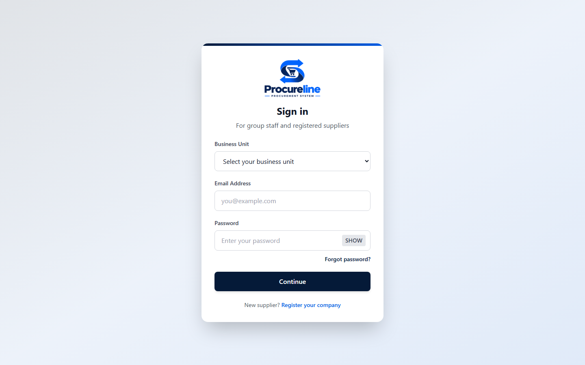
Figure The sign-in page. Suppliers register through the link at the bottom.
Open your organisation's address. The page says Sign in, with the line For group staff and registered suppliers. If a Business Unit list is shown, choose your organisation.
Enter your Email Address and Password and click Continue. SHOW lets you check what you typed.
Open your email. The page now says Enter verification code and names the address the code went to. The code has six digits and expires after 10 minutes.
Type the code and click Verify & sign in. If it has expired, click Back to sign in and start again; a new code is sent.
You land on your Dashboard, with your name and role on the card at the top of the left-hand menu.
No code arrived? Check the spam folder, and check that the address on your user record is the one you are reading. Codes go to the address your administrator entered. If it is wrong, the administrator corrects it under Organisation › Staff Team; a supplier asks the buyer's Procurement team.
1.3 Forgotten password
On the sign-in page click Forgot password?.
Enter your Email and click Send reset link. The page says a link has been sent if an account exists; it does not reveal whether the address is known.
Open the email and follow the link. The page Set new password asks for a New password and Confirm password, at least 6 characters.
Click Update password, then sign in as usual. If the page says the link is invalid or incomplete, request a new one.
To change a password you still know, open your profile (1.4) and use Current Password, New Password and Confirm New Password. A supplier whose first password was generated by Procurement should change it at the first sign-in.
1.4 The screen
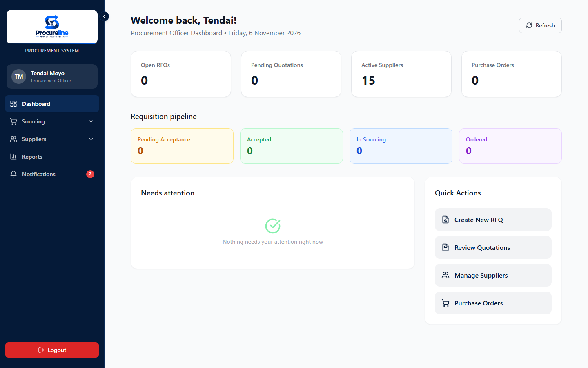
Figure The layout is the same on every page: your card and the menu on the left, the page title and its main action at the top, and the content below. This is a procurement officer's dashboard.
Element
How it works
Menu
Shows only what your role can do. Sections such as Sourcing or Payables open one at a time, and the section holding your current page opens by itself. The arrow at the menu's edge collapses it to icons
Badges
An amber count beside a menu item is work waiting for you: approvals, authorisations, activations to decide. A red count on Notifications is unread messages. Collapsed, a count becomes a dot
Profile
Click your name on the card above the menu to see your details and change your password. An administrator also sees the organisation's settings there (9.4)
Notifications
Notifications lists everything that has reached your step, newest first, each linking to its record. The same events are emailed to you
Drawers and wizards
Creation forms open in a drawer over the list, often in named steps with Back and Next. Closing a drawer with unsaved entries asks whether to discard them
Lists
Every list has a search box, a status filter and a View button per row. Long lists are paged; choose how many rows to show per page at the foot
Reasons
Every rejection, return, cancellation, waiver and override needs a reason. Where a fixed list is offered, pick from it; Other needs an explanation
Overdue
Approval queues mark items that have waited longer than the one-hour target; the RFQ list marks sourcing that has taken longer than two days
Numbers and money
Record numbers are your organisation's own. Values are in your organisation's currency; approval limits are applied in US dollars at the stored exchange rate
Signing out
Use Logout at the foot of the menu, always on a shared computer. A session that is left open stays valid for several days
1.5 Your dashboard
The dashboard is the first page after sign-in and differs by role. It shows counts for your own pipeline, the items waiting on you under Needs attention, and Quick Actions. Two things are true for everyone: a count on the dashboard is a link to the list behind it, and an item appears in your queue only when it is at your step. If something you expect is missing, it is still with the person before you. Each role's part describes its dashboard.
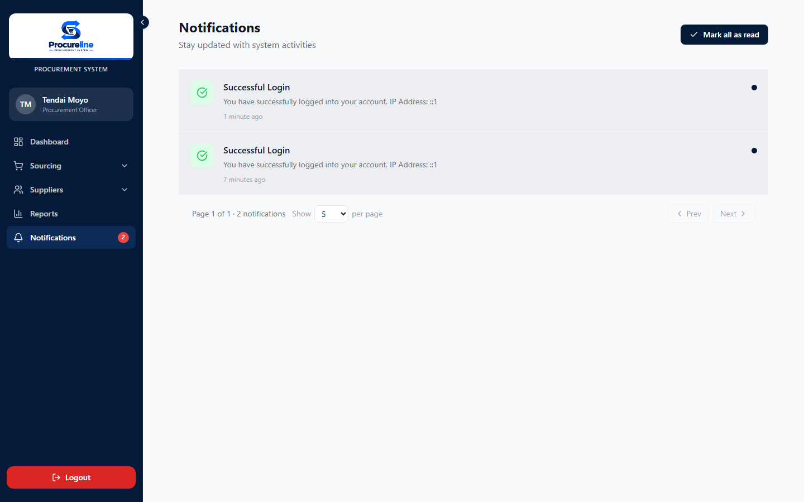
Figure Notifications: everything that has reached your step, newest first. Mark all as read clears the red badge.Part 2
Who does what
Eight roles use the system, and each sees and does only its own work. No single person can complete a purchase alone: the requester cannot approve, the approver cannot receive, and the receiver cannot pay.
2.1 The roles
Role
Who holds it
What they do in the system
What they cannot do
End user
Staff in any department or site
Raise requisitions for their department and track them to delivery
Approve anything; see other people's requests
Department head
Head of each department; a deputy can act for them
Approve or reject the team's requisitions; raise their own, which go straight to Stores; collect delivered goods from Stores
Approve their own requisition; approve purchase orders; pick a winning quotation
Stores officer
Stores and warehouse staff
Check stock against requisitions; issue stock; receive goods on a GRV and reject what is faulty; move stock between sites; set reorder levels and request restocks
Approve orders or invoices
Procurement officer
Procurement staff
Accept requisitions; issue RFQs; select the winner with a justification; raise orders; onboard suppliers and submit them for activation; handle bank-detail changes; evaluate suppliers
Activate a supplier alone; authorise their own award; approve orders
Head of Procurement
The department head of the Procurement department
Everything a procurement officer does, plus: authorise awards; first approval on every order; approve waivers; approve, return or reject supplier activations
Select a winner and authorise the same award; approve an activation they submitted
Finance manager
Finance team
Second approval on orders; match and approve invoices; record payments; set department budgets
Raise orders or receive goods
COO
COO of the organisation
Final approval on orders at or above the organisation's limit (default USD 5,000); approve waivers; approve, return or reject supplier activations
Manage users, departments and sites; read the audit log; view orders and reports
Any business step: approvals, awards, receiving, payments
Two-person rules. An award needs one person to select it and the Head of Procurement to authorise it. A supplier activation needs one person to submit it and the Head of Procurement or the COO to approve it. A bank-detail change needs a call-back by one person and approval by another, neither of them the requester.
2.2 The purchase, step by step
A purchase moves through 20 steps in five phases. Each step unlocks only when the one before it is complete. The tinted rows are controls the system enforces.
Figure The five phases of a purchase. The rehearsal purchase in the launch checklist runs all twenty steps once, with an order above the COO limit.
#
Step
Who
What the system checks
See
1
Raise and submit a requisition
End user or department head
At least one item; a title
3.1
2
Approve the requisition
Department head or deputy
Not the requester; over budget needs a reason and Finance is told
3.5
3
Stock review
Stores officer
Items in stock are issued; only the shortfall goes on
4.1
4
Accept for sourcing
Procurement officer
Within 2 days, or it is marked overdue
5.2
5
Publish the RFQ to invited suppliers
Procurement officer
A deadline; suppliers matched by category, topped up to three
5.3
6
Submit sealed quotations
Suppliers
Bids stay sealed until the RFQ closes
10.4
7
Close the RFQ; bids ranked
Procurement officer
Fewer than three quotes needs a waiver from the COO or Head of Procurement
5.4, 5.5
8
Select the winner with a justification
Procurement officer
A written reason, for the whole quotation or line by line
5.6
9
Authorise the award
Head of Procurement
A different person from the selector; the supplier must be activated with KYS complete
7.1
10
Raise and submit the purchase order
Procurement officer
One order per accepted quotation
5.8
11
Approve the order
Head of Procurement
Always
7.2
12
Approve the order
Finance
Always
8.1
13
Approve the order
COO
Only at or above the organisation's limit in USD; below it, skipped
7.2
14
Order sent; supplier acknowledges
System, then supplier
The order PDF is emailed on the last approval; acknowledging marks it issued
10.5
15
Receive the goods on a GRV
Stores officer
Delivery note, who delivered, counts, witnesses, MSDS for hazardous goods
4.3
16
Reject what is faulty
Stores officer
On the same GRV: rejected goods stay out of stock and remain owed; the supplier is told why
4.4
17
Submit an invoice against the order
Supplier
Only issued orders; lines come from received quantities
10.7
18
Three-way match; approve the invoice
Finance
Order, GRV and invoice must agree within 2%; a variance needs a written reason
8.2
19
Record the payment
Finance
Tuesday or Thursday run
8.3
20
Evaluate the supplier
Procurement officer
Seven criteria, scored 1 to 5
5.10
Any approver can reject with a reason, which sends the record back with that reason on file. A requisition, RFQ or purchase order can also be cancelled with a reason from a fixed list.
2.3 Your menu
The left-hand menu is different for each role. These are the menus as built; Dashboard and Notifications appear for everyone and are left out below.
End userMy Requisitions
Department headApprovalsRequisitionsTeam RequisitionsMy RequisitionsReports
For anyone who asks for goods or services, and for the department heads who approve those requests. A requisition is the start of every purchase: what you need, how many, and why.
Your dashboard. An end user sees My Requisitions, Drafts, Awaiting HOD Approval and Fulfilled, with a reminder of drafts not yet submitted and anything rejected recently. A department head sees Dept. Requisitions, Awaiting My Approval, Approved and POs Pending Approval, and a Needs attention list of requisitions awaiting their approval.
3.1 Raise a requisition
End user or department head
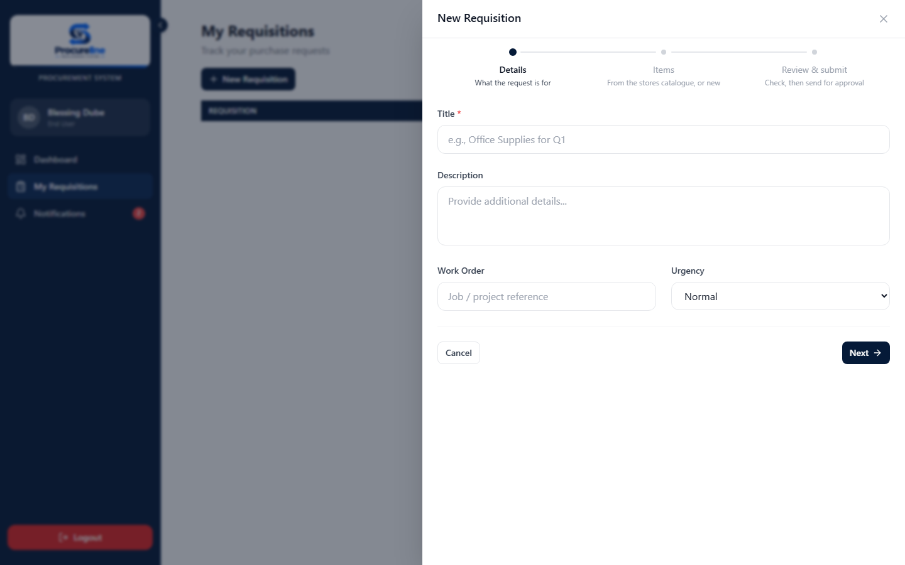
Figure The New Requisition drawer opens over the list. Three steps: Details, Items, Review & submit.
OpenMy Requisitions and click New Requisition. The form opens in a drawer with three steps: Details, Items, Review & submit.
Details. Give a Title (required), a Description, a Work Order reference if there is one, and the Urgency: Normal or High Priority. Click Next.
Items. Click Add Item. In Item, search the stores catalogue; pick a catalogue item (the row shows its code, unit and how many are available) or choose Add "…" as a new item for something not in the catalogue. Set Package, Quantity, Unit, an estimated unit price if you know it, and a Specification. Click Add. Repeat for each line.
Equipment and photos (optional). For a spare part or a repair, open Equipment details & photos on the item and record make, model, plant number, serial numbers and the OEM part number. Add photos of the data plate, the part or the fault, with a caption. Suppliers see these with the RFQ, which cuts wrong parts.
Review & submit. Check the summary and the Estimated total. Estimated prices let your department head check the request against the budget.
Click Submit for Approval, or Save Draft to finish later.
The requisition appears in your list as Pending HOD Approval and your department head is notified. A draft shows as Draft until you submit it.
Closing the drawer with unsaved entries asks Save this requisition? with the choices Discard, Keep editing and Save draft. A draft needs at least a title.
3.2 Submit and track it
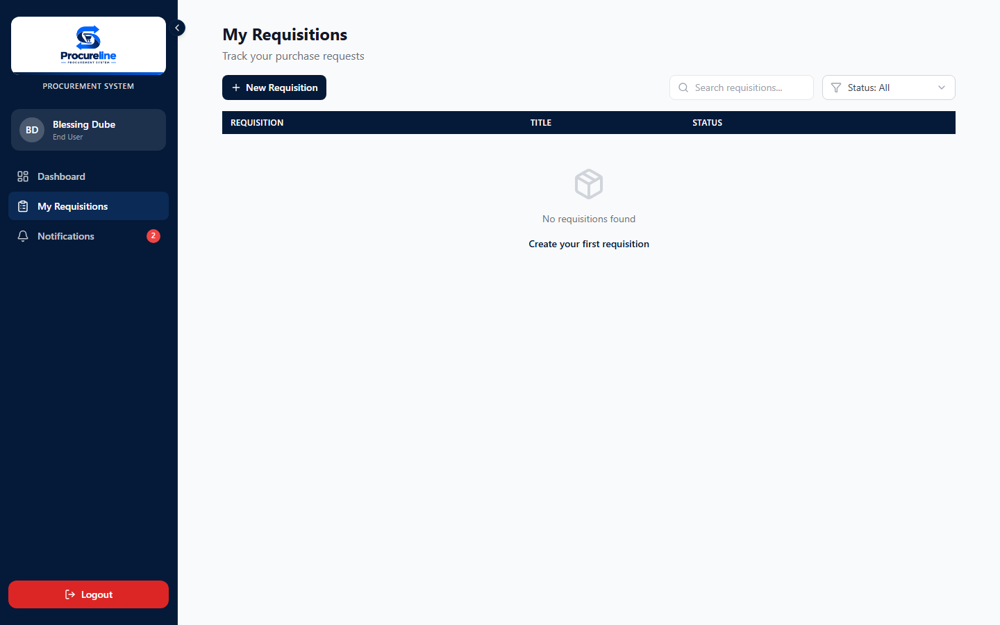
Figure My Requisitions: the list an end user sees, with New Requisition above it and search and status filters on the right.
Submit a draft from the list with Submit, or open it with View and submit from there. A draft with no items cannot be submitted.
Track it in My Requisitions. The status badge follows the request through sourcing and ordering (3.7). Open it with View for the full picture: the line items with quantity delivered, a Purchase order card showing which approval the order is waiting on, an RFQ card, a Stores card and an Activity timeline.
Search and filter the list by status; the row shows the department and the number of items, and a chip for high-priority requests.
Rejected? The reason is on the record under Activity. Correct the request and raise it again; a rejected requisition is not reopened.
3.3 Collect goods from stores
When Stores has issued items from stock, or has received a delivery for your requisition, the goods are collected through a store requisition. The department head raises it.
Department head
In Requisitions › Team Requisitions or on the requisition itself, click Req. from Stores (shown once goods are delivered to Stores).
Stores marks it Ready to collect and you are notified with any note from Stores.
Send someone to collect. Stores records who collected on the Hand over form and prints an issue note for them to sign.
The requisition's Stores card shows Collected; the request is complete.
If the order arrives in more than one delivery, collect each part as it comes. After a later delivery, Req. from Stores appears again and asks only for what has not yet been collected.
3.4 Cancel a requisition
Open the requisition and click Cancel requisition. Choose a Reason for cancellation from the list: No longer required, Duplicate request, Budget no longer available, Specification changed, Sourced elsewhere, Project or work order cancelled, or Other with details. Confirm with Confirm cancellation. An end user can cancel a draft or a request still with the department head; a department head can also cancel one in stores review. Once Procurement has accepted it, only Procurement can cancel it. Cancelling also cancels open RFQs and draft orders linked to it, and cannot be undone.
3.5 Approve or reject a requisition
Department head or deputyFigure Team Requisitions: requests raised by the department, for the head to approve or reject.
Open Requisitions › Team Requisitions, or click Requisitions awaiting your approval on the dashboard. Each row has Approve and Reject.
Check the lines first if you want to change them: open the request with View. While it is with you, each line has Edit to change the quantity and Remove to drop it. Remove anything you do not want purchased before approving.
Approve. Click Approve, add Comments if useful, and confirm. If the request takes the department over its budget, the box Over budget shows the available amount, the request and the shortfall, and a Reason for approving over budget is required. The button becomes Approve over budget; the reason is recorded and Finance is notified.
Reject. Click Reject and give the Reason for Rejection, which the requester sees.
Toast Requisition approved and sent to stores. The request moves to Stores Review. The one-hour target applies; the Approvals queue marks items that have waited longer.
Purchase order approvals. Since 28 October 2026 department heads no longer approve purchase orders. The Approvals page for a department head shows only older orders that were already at that stage, and the Head of Procurement's queue. Orders are approved by the Head of Procurement, Finance and, above the limit, the COO.
3.6 A department head's own requisition
A department head cannot approve their own request, so submitting is the approval. In the form the last step says Check, then send to Stores and the button is Send to Stores; on the list a pending request of their own has Send to Stores. If it is over budget, it is reported to Finance as an override. The request then follows the normal path from stock review onwards.
3.7 Requisition statuses
Badge
Meaning
Who acts next
Draft
Saved, not submitted
The requester
Pending HOD Approval
Waiting for the department head or deputy
Department head
Stores Review
Stores is checking what is in stock
Stores
Fulfilled from Stock
Everything was in stock and has been issued; nothing to buy
Collect from Stores
Pending Acceptance
With Procurement, to accept for sourcing
Procurement
Accepted, Sourcing, Quoted
An RFQ is being prepared, is open, or has quotations to evaluate
Procurement
PO with Head of Procurement, PO with Finance, PO with COO
The purchase order is at that approval stage
That approver
Ordered from supplier, Partly delivered
The supplier has the order; some goods may have arrived
Supplier, then Stores
Delivered to Stores
Goods received and accepted; ready to request from Stores
Department head (3.3)
Collected, Completed
Done
Rejected, Cancelled, PO rejected
Stopped, with the reason on the record
Raise again if still needed
Part 4
Stores
Stores sits at both ends of a purchase: it checks what is already on the shelf before anything is bought, and it receives what arrives before anything is paid. Nothing enters or leaves stock without a record.
Your dashboard. Inventory Items, Low Stock Items, Pending Deliveries and Approved POs, with a Needs attention list of requisitions to review, items below reorder level and deliveries pending receipt. Quick actions: View Inventory, Pending Deliveries, Stock Alerts.
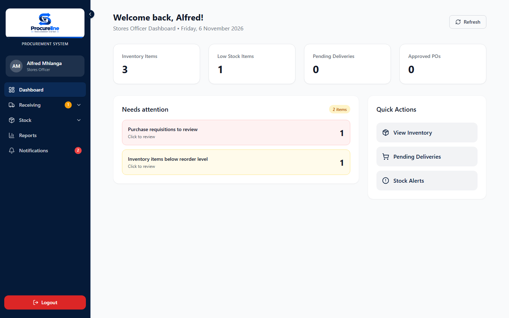
Figure The Stores dashboard: stock, low stock and deliveries at a glance, with the queue under Needs attention.
4.1 Stock review of a requisition
Stores officer
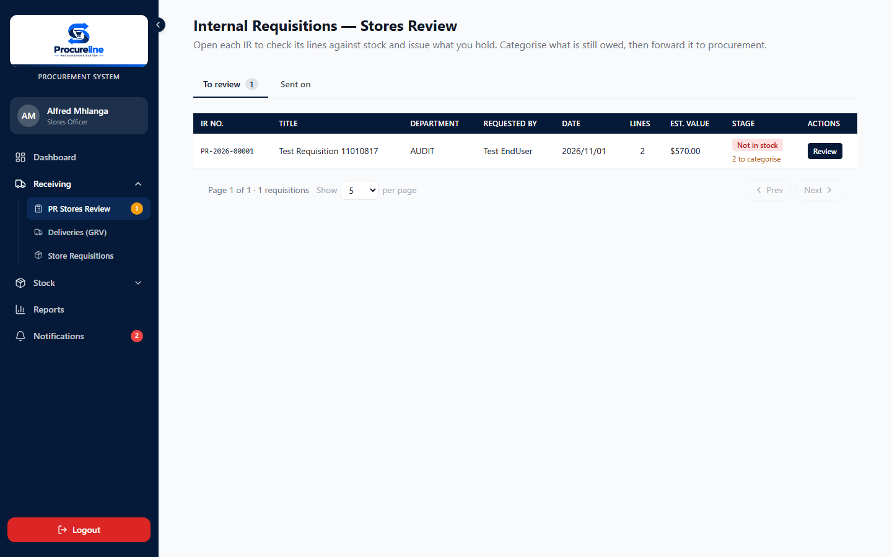
Figure Internal Requisitions, Stores Review: the To review tab lists approved requisitions waiting for a stock check.
Every approved requisition comes to Stores first, under Receiving › PR Stores Review (titled Internal Requisitions — Stores Review). Only what is not in stock goes on to Procurement.
On the To review tab, click Review on a requisition. The drawer lists each line with In stock (n here, n at other sites, or Search to check for a new item) and a Category.
Issue what you have. Click Issue from stock on a line that is in stock. You are taken to Inventory with the banner Issuing for IR-…; confirm the item and click Issue. An issue is all or nothing: if there is not enough stock the system says so and nothing moves.
Categorise the rest. Every line that still has to be bought needs a Category; the drawer warns how many lines are still uncategorised. The category is what matches the request to suppliers.
Send it on. Click Forward to procurement. If every line was issued, the button is Fulfill from stock and the requisition is closed. Auto-process issues whatever is in stock and forwards the rest in one go.
Toast Forwarded to procurement. The requisition moves to the Sent on tab, where you can follow it: Awaiting procurement, Out for quotation, Purchase order raised, with the expected delivery date and a Receive in Deliveries shortcut once an order exists.
4.2 Store requisitions: hand-overs
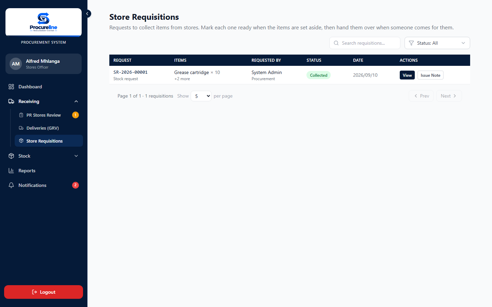
Figure Store Requisitions: collection requests to mark ready, hand over and print an issue note for.
A department collects issued or delivered goods through a store requisition, under Receiving › Store Requisitions.
A new request shows as New request. Pick the goods, then click Mark ready and add a Note to the requester if useful (where to collect, when). The requester is told.
When they arrive, click Hand over and record the collector's Full name, ID / Employee no., Department and Contact number. Leave these blank only if nobody is available to sign.
Click Issue Note to print the note for the collector to sign and file.
To refuse a request, click Reject and give the Rejection Reason.
The request shows Collected (or Part collected if some lines remain), and the requisition's Stores card updates.
4.3 Receive a delivery (GRV)
Stores officer
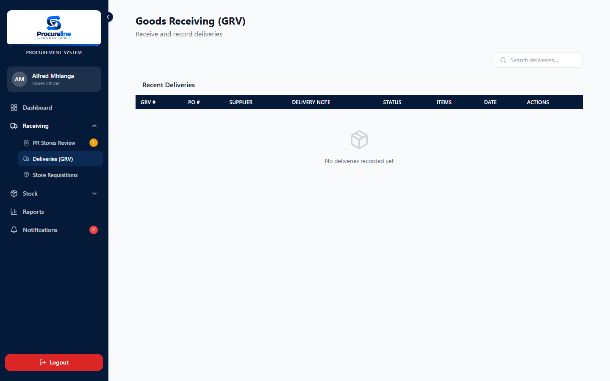
Figure Goods Receiving (GRV): the banner counts orders awaiting delivery; recent deliveries are listed below with their GRV numbers.
Under Receiving › Deliveries (GRV), the banner lists every purchase order with goods still due, including the balance of an order already part-delivered. Click Show all when there are more than three. Nothing can be invoiced until the goods are on a GRV.
Click Receive on the order. The Receive Goods wizard has four steps.
Delivery. Enter the Delivery Note Number and who Delivered the goods: full name (required), ID number, vehicle registration and contact number. You are recorded as the receiving officer.
Count items. For each line, enter what was Received. Count physically; do not copy the delivery note. A part-delivered order shows how many are still due. If any arrived damaged, wrong or not to specification, enter them under Rejected with a Reason for rejecting (4.4).
Inspection. Record who inspected, and the Witnesses present (MT, Security, SHEQ). Tick Delivery contains hazardous materials if it does and enter the MSDS reference; a hazardous delivery cannot be received without one.
Review & receive. Click Confirm Receipt.
Toast Goods received successfully, or Goods received. 1 rejected and still owed by the supplier. The GRV has a number, the accepted goods are in stock, the order shows partly or fully received, and the supplier is told what was accepted and rejected. Use Print on the row for the GRV document.
Short deliveries. Enter only what actually arrived. A line received short leaves the order partly received; it stays in the banner, and the balance is received on a later GRV in the same way.
4.4 Rejected goods
Goods are accepted or rejected when they are counted, on the receive form in 4.3. There is no separate acceptance step afterwards.
Rejected goods are not added to stock and do not count against the order. The order stays partly received until the supplier replaces them, and they are received on a later GRV.
The GRV shows Partially accepted, or Rejected when nothing was accepted. The printed GRV lists each rejected quantity with its reason.
The supplier is told what was rejected and why, and has five days to collect the goods.
Only accepted goods count in the three-way match, so the supplier cannot be paid for what was rejected.
4.5 Inventory and catalogue
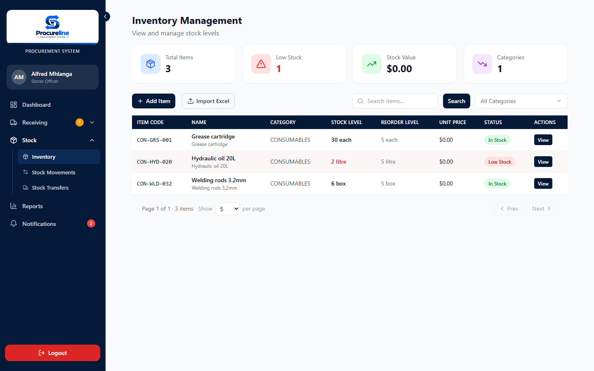
Figure Inventory: stock level against reorder level, with Low Stock marked. Add Item and Import Excel sit above the list.
Stock › Inventory shows every item with its stock level, reorder level and status: Out of Stock when nothing is on hand, Low Stock at or below the reorder level, otherwise In Stock. The tiles count items, low stock, stock value and out of stock; click Low Stock or Out of Stock to list only those. The dashboard, the reports and the alerts all count low stock the same way.
Add an item.Add Item opens a three-step form: Item (code, auto-generated if empty; category; name; description), Stock (unit, unit price, current quantity, reorder level) and Review & add.
Reorder levels. Each item has a reorder level, and each site can set its own. Open View on the item, enter this site's Reorder level and, if you always order the same amount, a Reorder quantity, then click Save levels. This never changes the quantity on hand. The view also shows how much was issued in the last 90 days; about one month's use is a common starting level. An item with no level uses 5 and is marked default, not set.
Held for collection. When you mark a collection ready (4.2), its stock is held for it and shown under the stock level. Nobody else can be issued that stock until it is handed over or the request is rejected.
Opening balances and bulk loads.Import Excel opens Bulk Import Inventory: download the template, fill it, upload, check the preview, then Import. Use this for the opening stock count at launch.
Issue. Stock leaves inventory only through an issue (4.1), a hand-over (4.2) or a transfer (4.6). Never correct a balance by editing it; record the movement that was missed.
4.6 Stock movements and transfers
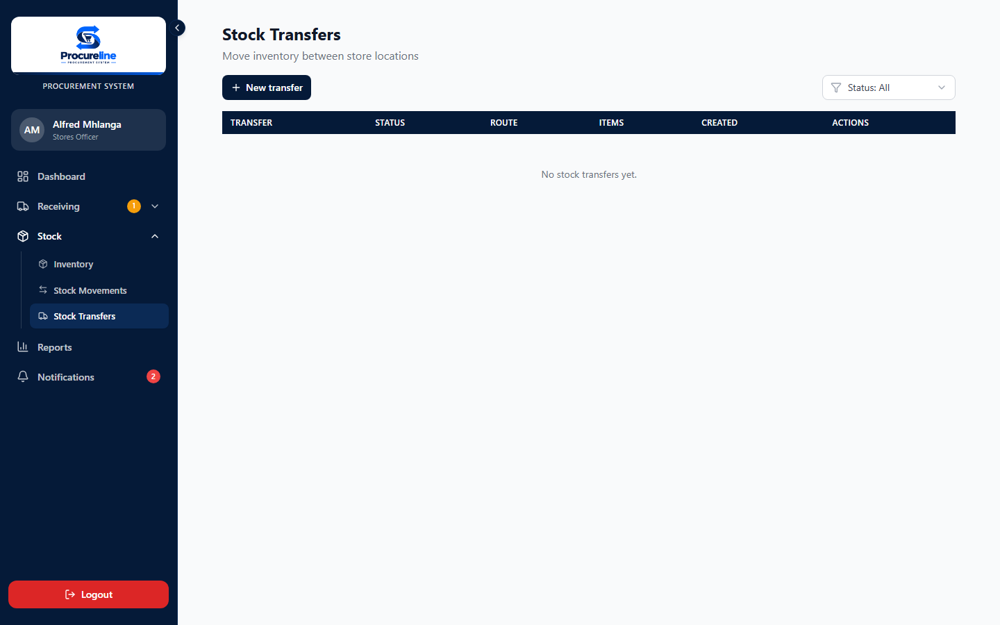
Figure Stock Transfers: moves between sites, each going through Approve, Ship and Receive.
Stock › Stock Movements is the full history: stock in, stock out, adjustments and transfers, filtered by type and date, searchable by item or reference. Use it to reconcile a count.
Stock › Stock Transfers moves stock between sites. Click New transfer, choose From site and To site, add lines, and Create transfer. The transfer then goes through Approve, Ship and, at the receiving site, Receive. Stock leaves the source on shipping and arrives on receipt, so a transfer in transit is visible at neither site.
4.7 Restock a low shelf
Stores officer
Stores asks for its own shelves to be refilled. A restock is a requisition from your department: your department head approves it, it goes straight to procurement without a stock check, and on delivery it goes into stock with nothing to collect.
On Stock › Inventory, click Restock on a row marked Low Stock or Out of Stock.
Check the Quantity to order. It is the site's reorder quantity if one is set, otherwise enough to bring stock to twice the reorder level.
Choose the Category so procurement can invite the right suppliers. Add a Note for the approver if useful, then click Request restock.
Toast sent to your department head for approval. The row shows the requisition number instead of the Restock button until the goods arrive, so the same shelf is never ordered twice. Follow it under Stock › Restock Requests.
Low-stock alerts. Once an hour Procureline checks every site. Stores officers at a site with items at or below their reorder level get one alert naming the site and the items, by email and in Notifications. An item is alerted once a day; an item that becomes low later in the day brings a new alert. The alert links to the low-stock list.
Your department needs a head. A restock is refused if the stores officer's department has no head or deputy to approve it. The administrator names one under Organisation › Departments.
Part 5
Sourcing and orders
Procurement takes a requisition from acceptance to a signed-off order: invite suppliers, collect sealed quotations, pick the winner with a reason, have the award authorised, and raise the order. The system will not let a step be skipped, so the quickest path is the correct one.
5.1 Your dashboard
Open RFQs, Pending Quotations, Active Suppliers and Purchase Orders, plus a Requisition pipeline with tiles for Pending Acceptance, Accepted, In Sourcing and Ordered. Needs attention lists requisitions awaiting acceptance, quotations awaiting evaluation and open RFQs collecting quotations. The Head of Procurement also sees suppliers awaiting their activation approval. Quick actions: Create New RFQ, Review Quotations, Manage Suppliers, Purchase Orders.
5.2 Accept a requisition
Procurement officer
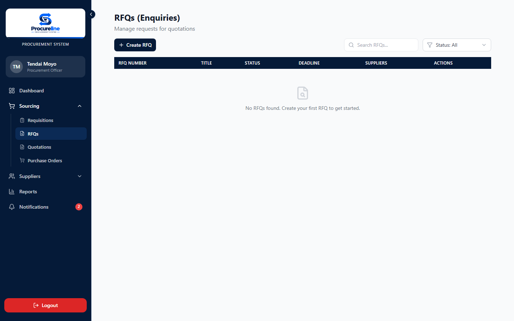
Figure RFQs (Enquiries): every request for quotation with its status, deadline and number of invited suppliers. Create RFQ is above the list.
Open Sourcing › Requisitions (titled Purchase Requisitions). Rows at Pending Acceptance have Accept and Reject.
Open it with View if you want to trim it: while it is with you, lines can be edited or removed, with the hint Remove any item you don't want purchased before approving.
Click Accept and confirm. To refuse it, click Reject with a Reason for Rejection; the requester is told.
Toast Requisition accepted — now create its RFQ, and the Create RFQ drawer opens with the requisition's lines already in it. The two-day sourcing clock starts; the RFQ list shows overdue after that.
5.3 Create and publish an RFQ
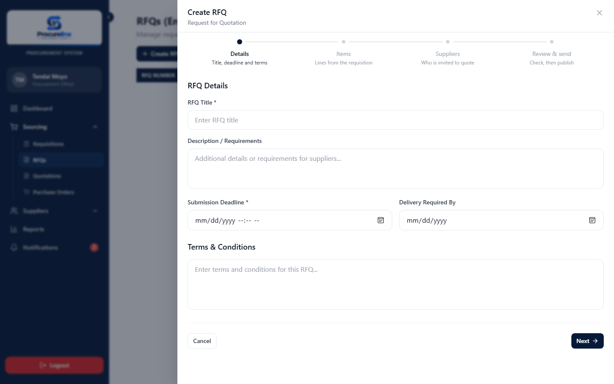
Figure The Create RFQ drawer: Details, Items, Suppliers, Review & send. Title and submission deadline are required.
From the accepted requisition click Create RFQ, or open Sourcing › RFQs and click Create RFQ. The drawer has four steps.
Details.RFQ Title and Submission Deadline are required. Add Description / Requirements, Delivery Required By and Terms & Conditions.
Items. The lines come locked from the requisition and cannot be changed here. If they are wrong, reject the requisition instead.
Suppliers. Suppliers in the requisition's categories are pre-selected. Use Add n related to top up from related categories, or search by name. The drawer warns when fewer than three suppliers are invited and when two records look like the same company. Invite at least three; a closed RFQ with fewer than three quotes needs a waiver (5.5).
Review & send. Check everything; each block has Edit. Click Publish RFQ, or Save as Draft.
Toast RFQ created and sent to suppliers. Every invited supplier gets a notification and an email headed New RFQ, and a reminder in the 48 hours before the deadline. A draft is published later from the RFQ's own page with Publish RFQ.
Until the deadline, bids are sealed: the RFQ page says Bids are sealed, the Quotations list shows Sealed bid instead of the supplier and amount, and nobody in the organisation can open one. This is deliberate.
5.4 Close the RFQ and compare bids
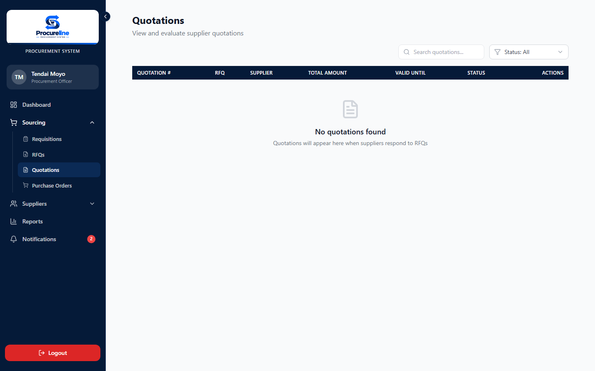
Figure Quotations: one row per supplier response. Until the RFQ closes a row reads Sealed bid.
Open the RFQ and click Close RFQ & Reveal Bids. Confirm; suppliers can no longer submit.
Read the Response Ranking panel: each quotation is scored out of 100 (price 50, delivery 20, past performance 20, completeness 10) with tags such as Lowest price and Fastest delivery, the lowest price and the spread. The ranking is advice, not a decision.
Open each quotation with View quotation to read the lines, brands, any Alternative offered note, delivery days, payment terms and validity.
Toast RFQ closed — bids are now visible. The RFQ shows Closed, and the requisition's RFQ card reads Under evaluation.
5.5 Fewer than three quotations
If the RFQ closed with fewer than three quotations, the award is blocked until the COO or the Head of Procurement approves a waiver. The COO and Head of Procurement are notified at closing so it does not sit unnoticed. On the quotation page, the Acceptance Authorization panel's first step, Minimum 3 competitive quotations, offers the waiver; on the award matrix each short line has Waiver. The approver picks a type: Single/sole source, Insufficient quotations received, Existing service agreement, Approved framework / contract, Unique / proprietary product, Custom manufacture / bespoke item, COO directed procurement, COO written instruction, or Other, and clicks Approve waiver. A procurement officer cannot approve their own waiver.
5.6 Select the winner
Procurement officer
There are two ways to award: the whole RFQ to one quotation, or line by line to different suppliers.
Whole quotation
Open Sourcing › Quotations and View the winning quotation.
In Acceptance Authorization, step Procurement selection with justification, write the Justification for selecting this quotation and click Select this quotation.
Toast Quotation selected. Waiting for the Head of Procurement to authorize. The Head of Procurement sees it under Authorizations (7.1). You cannot authorise your own selection.
Line by line (split award)
On the RFQ click Split Award. The matrix shows one row per line and one column per supplier, cheapest first, with the spread per line.
Click the price you are awarding on each line and type the Justification when asked. The line shows Awarded (needs auth).
The Head of Procurement authorises each line with Authorize. Then click Generate POs for authorized lines: one order is created per supplier.
Lines nobody quoted, or that you did not award, go back out with Re-source unquoted / unawarded lines, which creates a new RFQ and notifies its invitees.
The supplier must be ready. An award is refused if the supplier is not activated (6.5), its KYS is incomplete for its tier, or a required document has expired. Check the supplier's facts strip (Spend authorisation: Authorised) before you select.
5.7 Request a price revision
On a quotation that is submitted or under review, Request Revision asks the supplier for a better price with a Reason for revision and optional target. The quotation shows Revision Requested; the supplier's new quote supersedes the old one. Use this before selection, not after.
5.8 Accept and raise the order
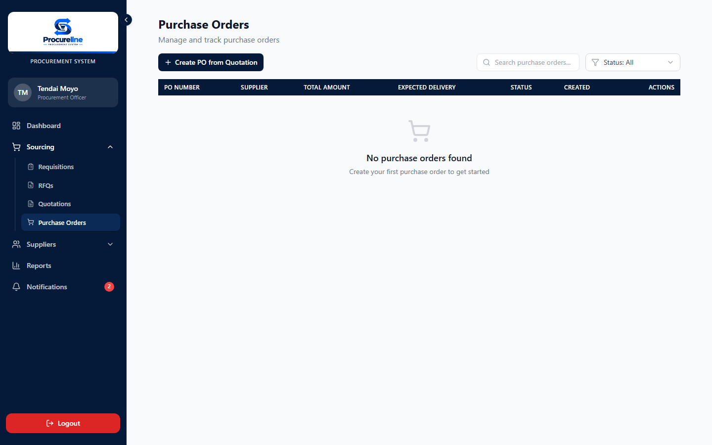
Figure Purchase Orders: each order with supplier, amount, expected delivery and approval status; Create PO from Quotation is above the list.
Once the panel says Fully authorized — you can now accept this quotation, click Accept and confirm. The other suppliers are told their quotation was not selected.
Click Create Purchase Order on the quotation, or Create PO from Quotation on Sourcing › Purchase Orders. The drawer has four steps: Quotation (pick the accepted quotation), Delivery (address and Expected Delivery Date), Terms and Review. Click Create Purchase Order.
Open the order and click Submit for Approval.
Toast Purchase order submitted to the Head of Procurement for approval. The order shows Pending Head of Procurement. One quotation can have only one order.
5.9 Approval, issue and delivery
Order status
What is happening
Pending Head of Procurement
First approval (7.2)
Pending Finance
Second approval (8.1)
Pending COO
Only when the order is at or above the organisation's COO limit in US dollars. An order in another currency is converted at the stored rate; if there is no rate on file, the order goes to the COO regardless
Approved
The last approver's click emails the order PDF to the supplier and notifies them. Nothing more for you to do
Issued
The supplier has acknowledged the order; a pending delivery is created for Stores
Partially Received, Completed
Stores has received some or all of the goods on a GRV
Rejected
An approver rejected it, with a reason on the order. Fix and resubmit, or cancel
To cancel, open the order and click Cancel PO with a reason from the list (supplier unable to deliver, price or terms changed, goods no longer required, duplicate, linked requisition cancelled, supplier default, other). Cancellation is blocked once goods have been received or an invoice is active. The supplier is notified.
5.10 Evaluate the supplier
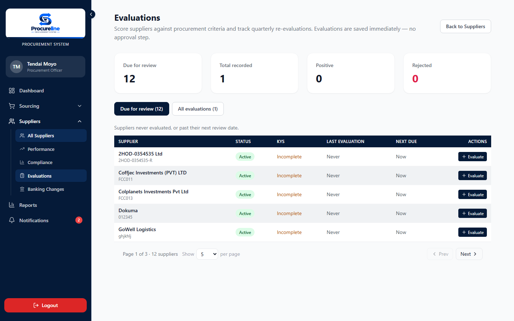
Figure Evaluations: the Due for review tab lists suppliers never evaluated or past their review date, each with an Evaluate button.
After delivery, score the supplier under Suppliers › Evaluations. The Due for review tab lists suppliers that are overdue or never evaluated. Click Evaluate: score the seven criteria from 1 to 5 (credit terms, contracts in place, market reputation, pricing, delivery, ease of dealing, consistent quality), choose the Evaluation type and a Recommendation (Approve, Conditional approval, Re-evaluate later, Reject), add notes and Save evaluation. The score feeds the past performance part of future rankings and the Performance view. Re-evaluation falls due every 3, 6, 12 or 24 months by tier.
Part 6
Supplier management
A supplier can be asked for a price while its checks are in progress, because a quote commits nothing. It cannot win an award or receive an order until its Know Your Supplier (KYS) checks are complete, a second person has approved its activation, and it is marked spend-authorised.
Figure Supplier statuses. Activation takes two people: Procurement submits, the Head of Procurement or the COO approves. Every change is logged with who made it and why.
6.1 Add a supplier
Procurement officer
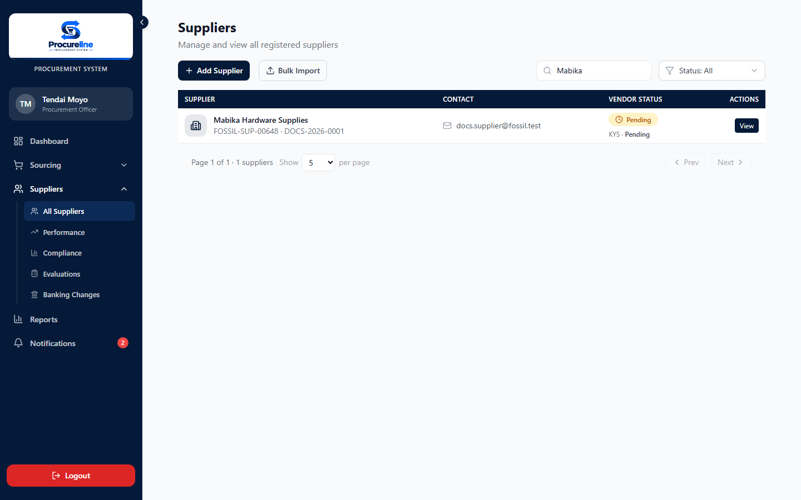
Figure Suppliers: search by name, code or registration number, filter by status, Add Supplier and Bulk Import. The code sits under each name.
Suppliers can register themselves (Part 10), or you can create them. Either way they start as Pending.
Open Suppliers › All Suppliers and click Add Supplier. Four steps: Company & login, Business, Banking, Review.
Company & login. Company Name, Registration Number, contact First Name and Last Name, and Email are required. Leave Password blank to have one generated.
Business. Optional: trading name, phone, tax and VAT numbers, Business Type (manufacturer, distributor, wholesaler, retailer, service provider, contractor, other), Entity Type (company, individual), address, and Categories of Supply. Categories are what match a supplier to RFQs, so set them.
Banking. Optional first bank account. Later changes go through bank-change approval (6.7).
Review and click Create Supplier.
Toast Supplier created — complete KYS to activate them. If a password was generated, the Supplier created box shows it once; it is also emailed to the supplier, who should change it at first sign-in. Continue to KYS opens the profile on the Documents tab. The supplier gets a permanent code such as ORG-SUP-00042 (your organisation's code, then a running number), shown under its name.
A company can be registered once. The registration number is compared ignoring case, spaces and hyphens, so a second record for the same company is refused.
6.2 Bulk import
Bulk Import on the supplier list takes an Excel, CSV or JSON file, or pasted CSV with a header row. Required columns: companyName, registrationNumber, contactPerson, email, phone; categories is optional. The preview highlights cells missing a required value; those rows are rejected and the rest imported. Imported suppliers start as pending and still need KYS and activation. Use this for the supplier register at launch.
6.3 KYS documents and checklist
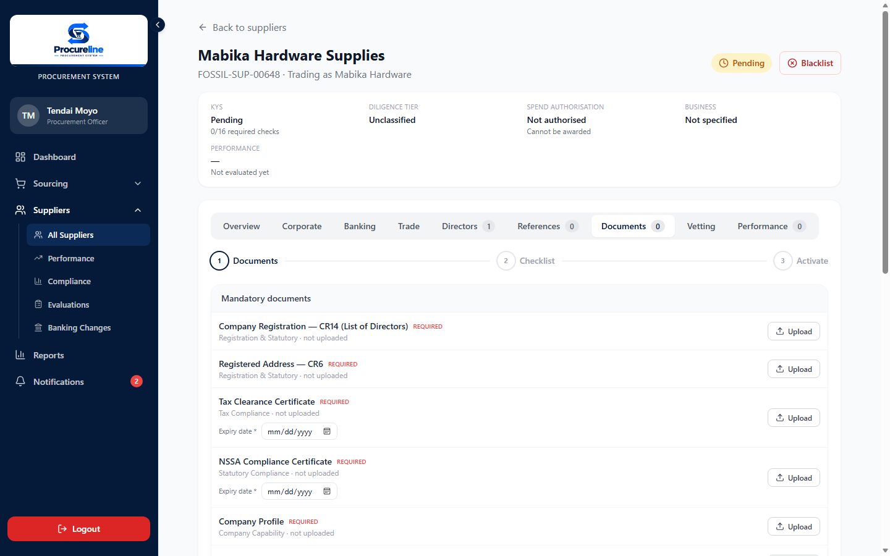
Figure A pending supplier on its Documents tab: the facts strip shows KYS progress, tier and spend authorisation; the wizard runs Documents, Checklist, Activate.
Open the supplier and the Documents tab. It is a three-step wizard: Documents, Checklist, Activate.
Documents. The list is split into Mandatory documents for the supplier's tier and Optional documents. Suppliers upload their own (10.2); you can also Upload or Replace for them. Each file is PDF, image, Word or Excel, up to 5 MB. Tax clearance, NSSA, insurance, ISO, industry licences and NEC need an Expiry date.
Check each file. Open it with View, then Verify it, or Reject it with a reason the supplier sees. A rejected or expired file shows why.
Checklist. Tick each item as satisfied; the tick saves at once. The counter shows required items done against the tier's requirement. Items are grouped: registration and statutory (CR14, CR6), tax clearance, NSSA and NEC, licences and ISO, company capability (profile, three client referrals), financial standing (audited statements, bank references, payment terms, liquidity), commercial and operations, and health, safety and environment (safety records, environmental policy, insurance, disaster plan).
Expiry matters on its own. A required document that has passed its expiry date blocks awards and orders to that supplier, whether or not anyone has noticed. Reminders go to the supplier and to Procurement 60, 30 and 7 days before.
6.4 Set the diligence tier
On the Activate step, the Diligence tier panel sets how deep the check must be. An unclassified supplier is treated as full depth, so low risk is never assumed. Click the tier and give the reason when asked. The panel suggests a tier from what it knows.
Tier
Meaning
KYS required
Re-evaluate
Critical
Sole source, or the business stops if they fail
All 16 required items
3 months
Strategic
High spend or long-term partner
All 16 required items
6 months
Tactical
Routine, bought competitively
CR14, CR6, tax clearance, NSSA, insurance
12 months
Transactional
Low value, low risk, easily replaced
CR14, tax clearance
24 months
Unclassified
Not yet assessed
All 16 required items
3 months
6.5 Submit for activation
Procurement officer or Head of Procurement
On the Activate step, click Submit for activation. The box reminds you that the Head of Procurement or the COO, not you, approves it, and that the supplier stays pending until then.
If KYS is short of the tier's requirement, the box lists what is missing and a Reason for the KYS override is required; the approver sees it and, by approving, takes the override in their own name. Otherwise add Notes for the approver if useful.
Click Submit.
Toast Submitted for activation. The supplier shows Awaiting approval with a banner naming you and the date. Every Head of Procurement and COO other than you is notified. If it comes back returned, the banner shows the reason; close the gap and submit again.
The supplier list filter Awaiting approval shows every open request; approvers also have Awaiting my approval. The approver's steps are in 7.4.
6.6 Suspend, blacklist, reactivate
The buttons sit beside the status badge on the supplier's page. Each asks for a reason and confirmation, and each is written to the audit log and the supplier's status history.
Button
When shown
Effect
Suspend
Active
No new invitations, awards or orders until reactivated
Mark dormant
Active
Stays on the register but set aside until reactivated
Reactivate
Suspended or dormant
Back to active. Not onboarding, so no second approval
Blacklist
Any status
Cannot be invited, quote, be awarded or register again; the reason is shown on the record
Lift blacklisting
Blacklisted
Back to pending. It must be submitted for activation and approved by someone else before it can win work
Rejecting or reopening a registration is for the Head of Procurement or the COO (7.5). Rejection says nothing against the company, unlike blacklisting.
6.7 Bank-detail changes
Procurement officer, two different people
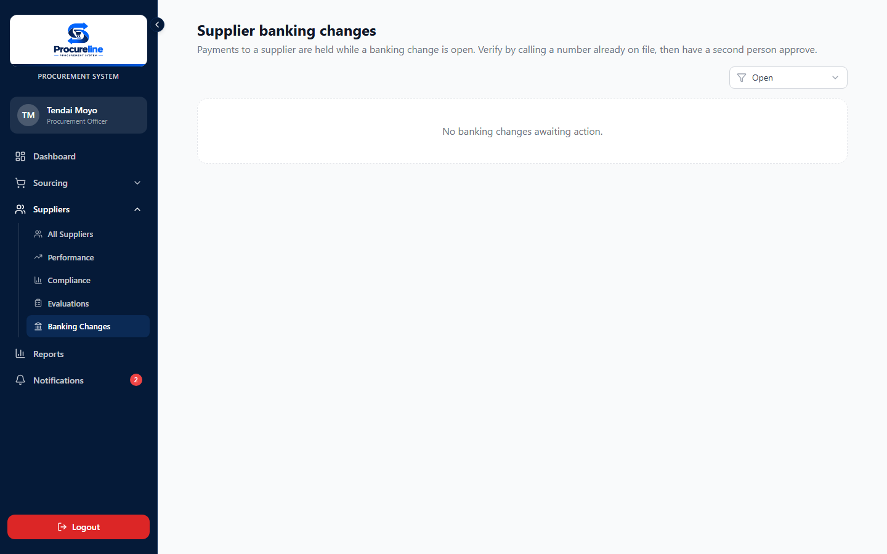
Figure Supplier banking changes: open requests with the old and new details side by side, Record callback, then Approve by a second person.
A change to where a supplier is paid is the classic fraud, so it is handled on Suppliers › Banking Changes with a call-back and a second person. Payments to the supplier are held while a change is open.
The supplier changes its bank details on its Company Profile (or you edit the Banking tab for them). The change is held as a request, shown as pending verification with the old and new values side by side.
Call back. Telephone the supplier on a number that was already on file before the request. The numbers on file are frozen while the request is open, so a number supplied with the change can never be the one called. Then click Record callback, enter the number you called and who confirmed the change. Calling a number not on file needs an override reason and is logged.
Approve. A different person, who is neither the requester nor the caller, clicks Approve. Or Reject with a reason.
Toast Banking change approved and applied. Payments have resumed. The supplier is told either way and sees the outcome on its profile.
6.8 Vetting record
On the supplier's Vetting tab, record how the supplier joined the register (Onboarding method: newspaper invitation, direct application, referral, existing supplier, other) and the Site visit: status, date, who conducted it and notes. Click Save vetting record. The Directors and References tabs hold contacts and at least three trade references, which the KYS checklist expects.
6.9 Compliance and performance views
Suppliers › Compliance: KYS verified and pending counts, coverage, suppliers pending activation, and a Compliance watchlist with incomplete KYS first. Start here each week.
Suppliers › Performance: scores from evaluations, bands from Excellent to Low, top suppliers, and who is Due for evaluation.
Suppliers › Evaluations: record and browse evaluations (5.10).
Reports, Suppliers tab: the registry with status, KYS, score, orders and spend per supplier, exportable to CSV.
Part 7
Sign-offs
The Head of Procurement and the COO are the second pair of eyes on the decisions that commit money or admit a supplier. Each decision is one click with a reason where it is a refusal, and each lands in a queue with a count on the menu.
Where to look. The Head of Procurement has Sign-offs › Authorizations (awards) and Sign-offs › Approvals (orders), plus every Procurement screen. The COO has Approvals (orders at or above the limit) and the Suppliers section. Both see Suppliers awaiting your activation approval on the dashboard.
7.1 Authorise an award
Head of Procurement
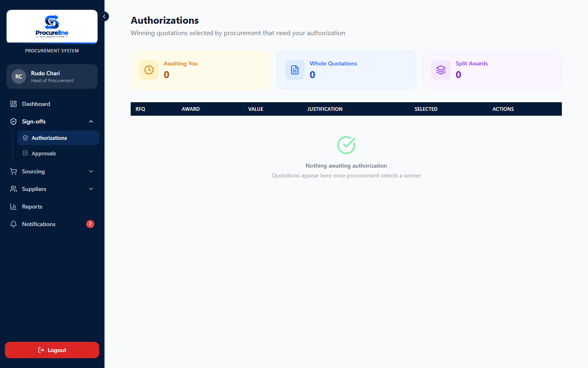
Figure Authorizations: quotations selected by Procurement that need the Head of Procurement's authorisation.
Open Sign-offs › Authorizations. Each row is a quotation a procurement officer has selected, with the RFQ, the value, the justification and who selected it. A row you selected yourself says You selected this and can only be viewed.
Click Review. Read the quotation, the ranking on the RFQ, and the justification.
In Acceptance Authorization, click Authorize as Head of Procurement. For a split award, open the RFQ's award matrix and click Authorize on each line.
Toast Quotation authorized. Ready for acceptance. The procurement officer can now accept it and raise the order. Authorisation is refused if the supplier is not activated, its KYS is incomplete for its tier, or a required document has expired; fix the supplier first (Part 6).
7.2 Approve a purchase order
Head of Procurement, then Finance, then COO at or above the limit
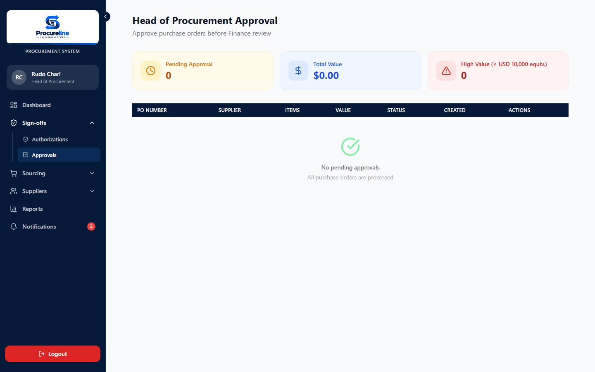
Figure Head of Procurement Approval: the first stage of every order, with Review on each row.
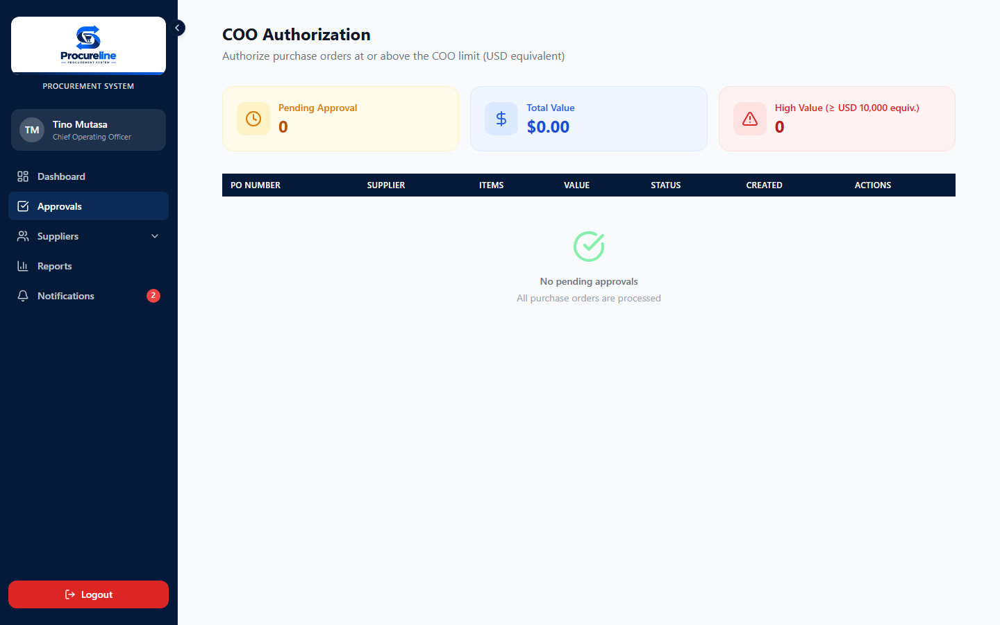
Figure COO Authorization: only orders at or above the organisation's limit reach this queue.
Open Approvals. The title says whose stage it is: Head of Procurement Approval, Finance Approval or COO Authorization. Tiles show the pending count, total value and orders of USD 10,000 or more. Rows waiting longer than 45 minutes show an age chip against the one-hour target.
Click Review. The box shows the supplier, total, payment terms, expected delivery, the lines with VAT, a High Value Purchase Order warning where relevant, and for the COO the approval history so far.
Click Approve, or Reject with Comments, which are required for a rejection.
Toast Purchase Order approved successfully. The order moves to the next stage, or if yours was the last, the order PDF is emailed to the supplier at once. A rejection returns the order to Procurement with your reason.
Stage
Approver
Required when
1
Head of Procurement
Always
2
Finance manager
Always
3
COO
Order total at or above the organisation's COO limit in US dollars (default USD 5,000). Other currencies are converted at the stored rate; with no rate on file, the order goes to the COO so an unknown conversion can never skip the top approval
Orders can also be approved from the order itself under Purchase Orders, where the approver whose turn it is sees Approve and Reject.
7.3 Approve a quotation waiver
Head of Procurement or COO
When an RFQ closed with fewer than three quotations you are notified. Open the quotation (or the award matrix line) and, in the step Minimum 3 competitive quotations, choose the waiver type and click Approve waiver. The types are listed in 5.5. Approve only where the reason is true on the file: a sole source, a framework contract, no responses received, a unique product, or a written COO instruction. The waiver and its type are logged against the award.
7.4 Decide a supplier activation
Head of Procurement or COO, never the submitter
Open Suppliers › All Suppliers and set the status filter to Awaiting my approval, or click Suppliers awaiting your activation approval on the dashboard.
Click View. The banner reads Awaiting activation approval — submitted by … on …, with any KYS override requested reason and the submitter's notes. The facts strip shows KYS progress, the tier and the business type.
Check the file. Open the Documents tab and look at the verified documents and the checklist for the tier; look at Directors, References and Vetting. If anything is missing and no override reason justifies it, return the request.
Choose one:
Approve activation: the supplier becomes active and spend-authorised. If an override was requested, the confirmation says Approving grants the KYS override in your name.
Return: give the reason. The request goes back to the submitter, the supplier stays pending, and it can be submitted again.
Reject registration: give the reason, which the supplier is shown. The supplier cannot be invited, quote or be awarded, but can still sign in.
The badge changes to Active, Pending or Rejected, the supplier is emailed, and the decision is in the audit log and the supplier's status history with your name and reason.
You cannot approve what you submitted. If you put the supplier forward yourself, the page says so and the buttons are not shown; another Head of Procurement or the COO must decide. If the checklist changed while the request waited and is no longer complete, approval is refused until the request is returned and resubmitted.
7.5 Reject or reopen a registration
A pending supplier that should not be on the register at all, for example a self-registration from a company you will never use, can be refused before it is ever submitted: open it and click Reject registration with a reason. A rejected supplier shows the banner Registration rejected by … on … and can be brought back with Reopen registration and a reason; it returns to pending and activation again takes two people. Rejection is not blacklisting: it says nothing against the company and a later registration under the same number is refused only because the record already exists.
Part 8
Finance
Finance approves every order, pays only what was ordered and received, and keeps department spending against budget. The three-way match is done by the system; Finance decides what to do when it fails.
Your dashboard. Pending Approval, Approved POs, Total PO Value and All Purchase Orders, with Purchase orders awaiting finance approval under Needs attention. Quick actions: Pending Approvals, Invoices, All Purchase Orders, View Reports.
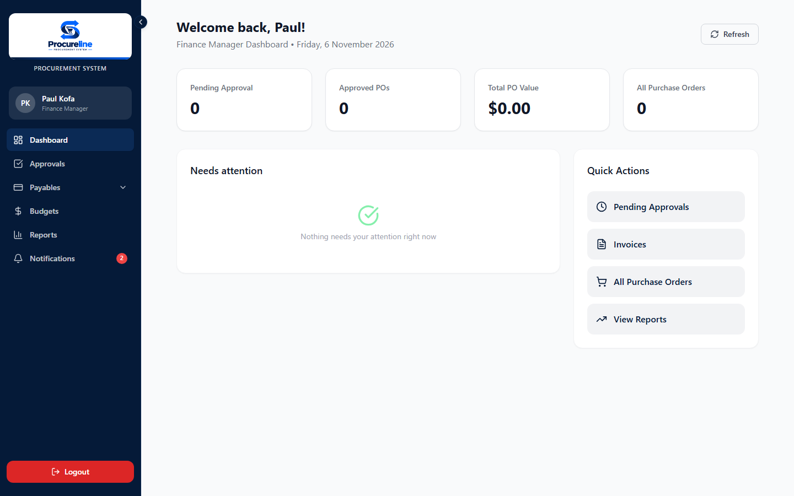
Figure The Finance dashboard: orders pending approval and their value, with quick actions to approvals, invoices and reports.
8.1 Approve purchase orders
Finance managerFigure Finance Approval: orders that have passed the Head of Procurement, waiting for Finance.
Finance is the second approval on every order, after the Head of Procurement. Open Approvals (titled Finance Approval), click Review, check the supplier, value, terms and lines, and click Approve or Reject with comments. The steps are the same as 7.2. Below the COO limit yours is the last approval, and the order is emailed to the supplier when you click. At or above the limit it goes on to the COO.
Check two things every time: that the order's department has budget for it (Budgets shows the committed amount), and that the supplier is one you expect to pay. The supplier's bank details are frozen while a bank change is open, so an order to a supplier with a change in progress will not be paid until that change is decided.
8.2 Match and approve an invoice
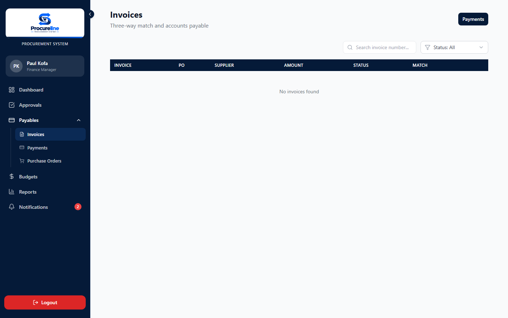
Figure Invoices: supplier invoices with their status and a match icon; View opens the three-way match.
Suppliers submit invoices against issued orders through their portal (10.7); Finance does not key them. Each invoice arrives under Payables › Invoices with a match icon.
Open the invoice with View. The Three-way match panel shows the order total, the value of goods received on GRVs, the amount already invoiced on this order, and this invoice. Below are the GRVs (or None — stores has not receipted these goods) and the line items.
If it matches (within 2% or one unit of currency of what was received and not yet invoiced), click Approve.
If there is a variance, the invoice shows Variance. Either Reject it with a Rejection reason so the supplier submits a corrected invoice, or, where the difference is explained and acceptable, write the Reason for approving despite the variance and click Approve with variance. The reason is logged against the invoice.
Toast Invoice approved for payment; the status is Approved and the supplier is told. An invoice with no GRV cannot be approved at all: ask Stores to receive the goods first. The approved invoices on an order can never exceed the value received.
8.3 Record a payment
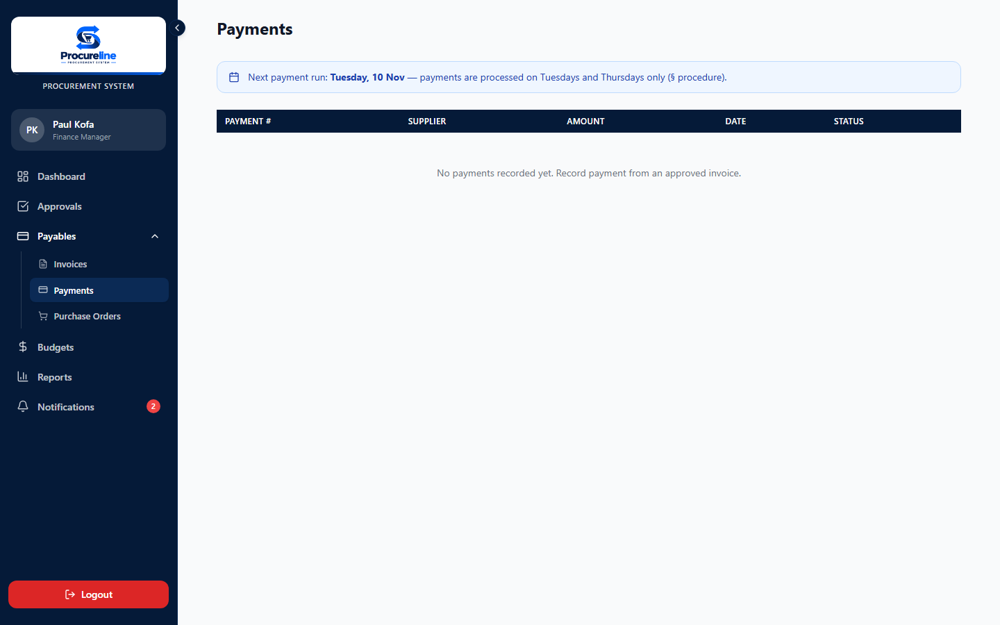
Figure Payments: every payment recorded, with the next payment run shown in the banner.
On an approved invoice click Record payment. The payment is recorded as a bank transfer dated today for the invoice amount, the invoice becomes Paid, and the supplier sees it in the payment history on their portal. Payables › Payments lists every payment and shows the next payment run; supplier payments are processed on Tuesdays and Thursdays only. Record the payment on the day the transfer is made, not before.
8.4 Budgets
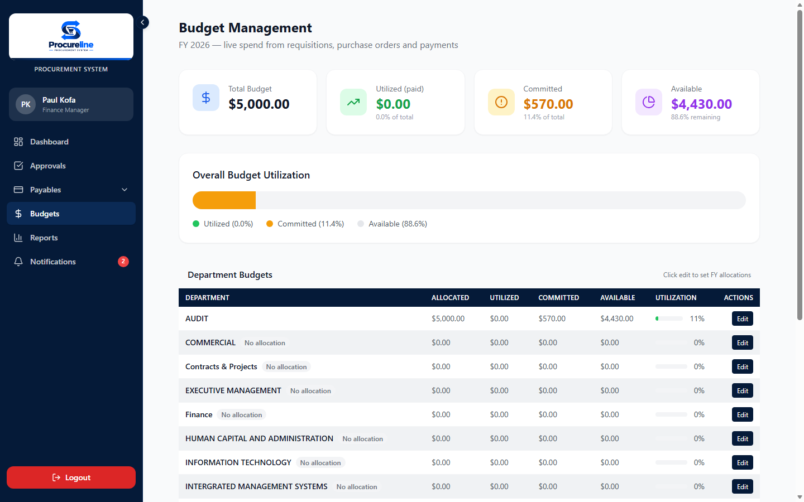
Figure Budget Management: allocation, utilised, committed and available per department, with Edit to set the year's allocation.
Budgets (titled Budget Management) shows the financial year's allocation per department against Utilized (paid), Committed (approved orders not yet paid) and Available, with a red banner naming departments that are over budget.
Click Edit on a department.
Enter the Allocated amount for the financial year and click Save.
Toast Budget allocation saved. From now on a requisition that would take the department over its allocation needs a written reason from its department head, and you are notified of each such approval. Set every department's budget before launch (step 9 of the checklist); a department with no allocation shows No allocation and cannot be checked.
Part 9
Administration
The administrator sets the organisation up in Procureline and keeps it tidy: sites, departments, users and their roles, and the audit log. The administrator cannot carry out any business step, which is what makes the audit log trustworthy.
Your dashboard. A system overview, recent activity, and attention rows for suppliers, KYS, evaluations due, low stock and failed sign-ins.
9.1 Sites
Create sites first, because departments, stock and deliveries refer to them. Open Organisation › Sites and click Add site: a short Code (such as HQ, locked once saved), the Type (HQ or Site), Name, city and province, and tick Has local store inventory for any site that holds its own stock. Stock transfers (4.6) move stock between sites that have inventory.
9.2 Departments
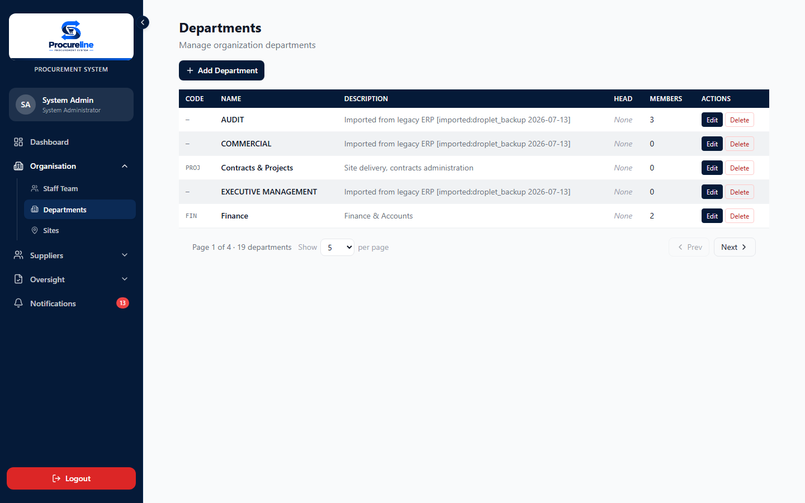
Figure Departments: code, name, head and members; Add Department opens the form.
Open Organisation › Departments and click Add Department: Department Name (required), a short Department Code, a description, the Department Head and a Deputy HOD. Both lists offer only users with the Department Head role, so create those users first (9.3) or come back and edit. The deputy can approve the department's requisitions when the head is away; name one for every department so approvals never stall. Create a department called Procurement: its head is the Head of Procurement.
9.3 Staff Team (users)
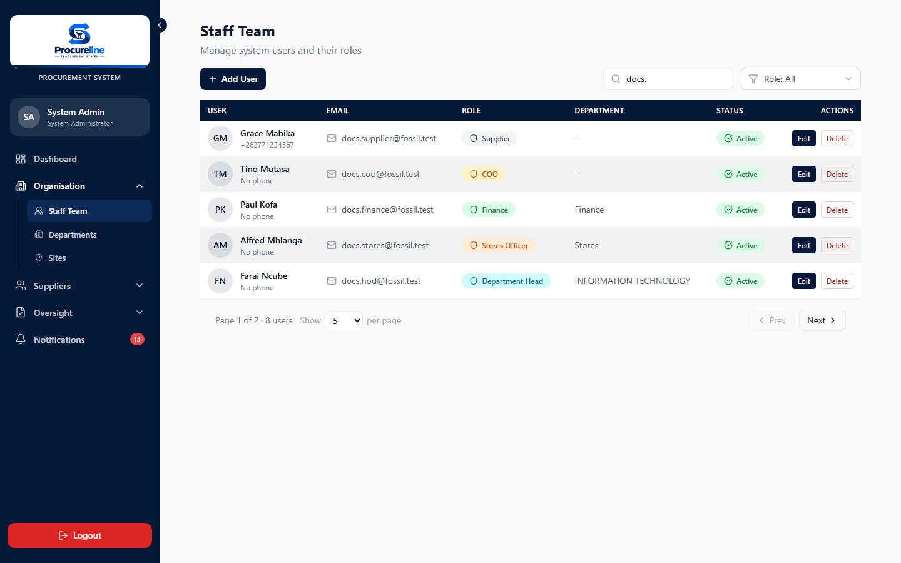
Figure Staff Team: each user with role, department and status; Add User opens the form.
Open Organisation › Staff Team and click Add User.
Enter First Name, Last Name and Email. Use the person's real work address: sign-in codes and every notification go there, and the email cannot be changed later. Set a Password of at least 6 characters and confirm it; the user should change it at first sign-in.
Choose the Role: Admin, Procurement Officer, Department Head, End User, Finance, COO or Stores Officer. Set the Department for everyone who raises or approves requisitions; a Department Head whose department is Procurement becomes the Head of Procurement, with full procurement access plus award authorisation and waiver approval. Add a phone number and leave Status as Active.
Click Create User.
Toast User created successfully. The user signs in at your organisation's address (1.2). To change a role or deactivate someone, click Edit; set Status to Inactive or Suspended rather than deleting, so their history stays attributed. Supplier logins are not created here; suppliers register themselves or are created by Procurement (6.1).
One person, one role. Give nobody two logins to get around a control. The two-person rules (awards, bank changes, activations) assume the submitter and the approver are different people, and the audit log records the account, not the person at the keyboard.
9.4 Organisation settings
Open your profile from the card above the menu. The panel Business unit settings (Procureline's name for an organisation's settings) shows the organisation's code, country, base currency, the COO approval limit with the exchange rate it is applied at, and the document branding (legal name, VAT number, address, logo) printed on orders. These are read-only here; changes to the currency, limit, exchange rate or branding are made by the Procureline operators. Before launch, confirm the limit matches your delegation of authority (step 6 of the checklist). The warning No exchange rate on file — every PO routes to the COO means exactly that for an organisation whose currency is not USD.
9.5 Audit log and evidence pack
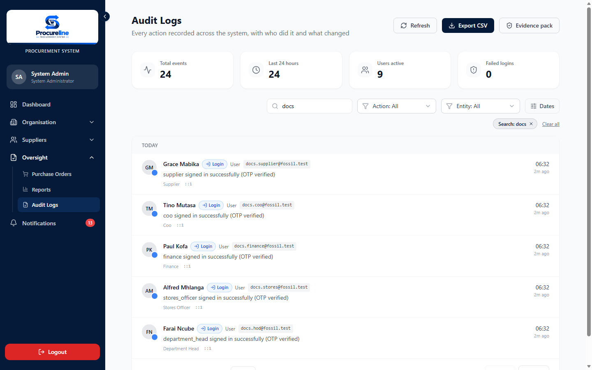
Figure Audit Logs: every action with who did it, filtered by action, entity and date; Export CSV and Evidence pack at the top.
Oversight › Audit Logs records every sign-in, failed sign-in, create, update, delete, approval, rejection, submission, upload and download, with the user, role, time, IP address and the fields that changed. Search by description, user or IP; filter by action, entity and date. Click an entry for Audit Log Details, including before and after values. Export CSV exports the filtered list; Evidence pack produces the controls evidence for auditors for the date range (default the last twelve months). Check the log daily during the first weeks (Launch Manual 1.7); the hourly jobs appear in it when they run.
9.6 Reports
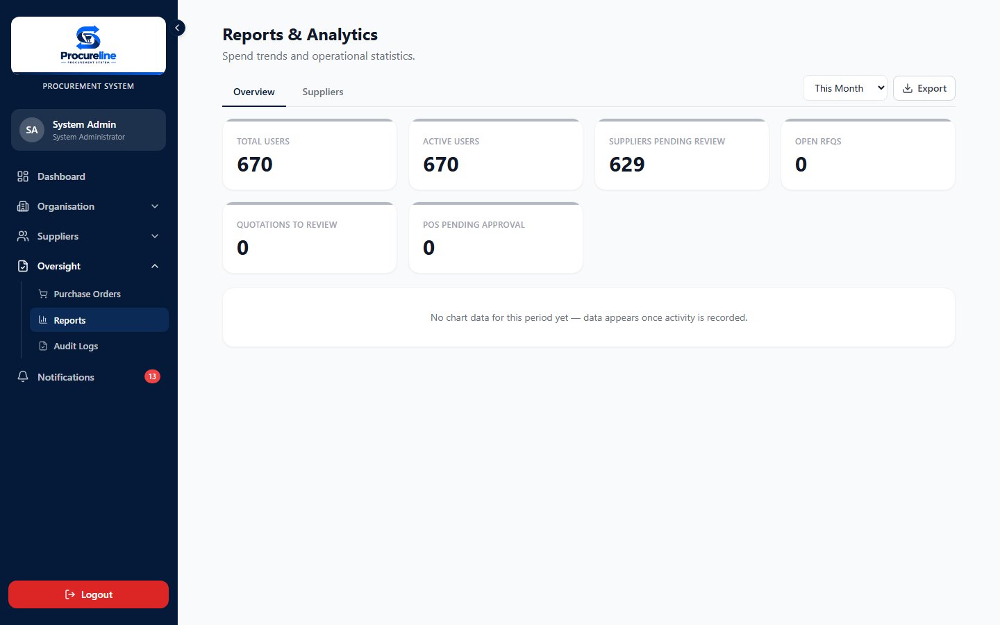
Figure Reports & Analytics: the Overview tab with period selection and Export; the Suppliers tab holds the supplier registry.
Oversight › Reports shows spend trends, department spend and order value by status for the week, month, quarter or year, with Export to CSV. The Suppliers tab is the supplier registry with KYS, scores, orders and spend. Reports are available to every staff role except end users.
Part 10
For suppliers
This part is for supplier companies. You register once with each organisation you supply through Procureline, upload your compliance documents, quote online, acknowledge orders, follow deliveries and invoice from the same place. You see only your own records.
Your menu.Bidding (My RFQs, Submitted Quotations), Orders (Purchase Orders, Deliveries, Invoices) and Account (Company Profile, KYS Documents), plus Notifications. Your dashboard shows open RFQs, orders and invoices at a glance.
Figure The supplier dashboard: RFQs, orders and invoices at a glance, with the supplier menu on the left.
Open the buyer's Procureline address and click Register your company under the sign-in box. The form has five steps: Account, Company, Address, Banking, Review.
Account. Your name, Email Address, Phone Number and a password of at least 6 characters. The email is your sign-in and receives every code and notice; the phone number is the one Procurement will call to confirm bank details.
Company.Company Name and Registration Number are required. Add trading name, VAT number, business and entity type, and the Product/Service Categories you supply; categories are how you get invited to RFQs.
Address and Banking. Your business address and country, and the bank account you want to be paid into.
Review and click Complete Registration.
The page says Registration Successful! and that your account is pending approval. Sign in (1.2) and go straight to KYS Documents. If the page says This company is already registered, sign in with the existing login or contact the buyer's Procurement team.
10.2 Upload your KYS documents
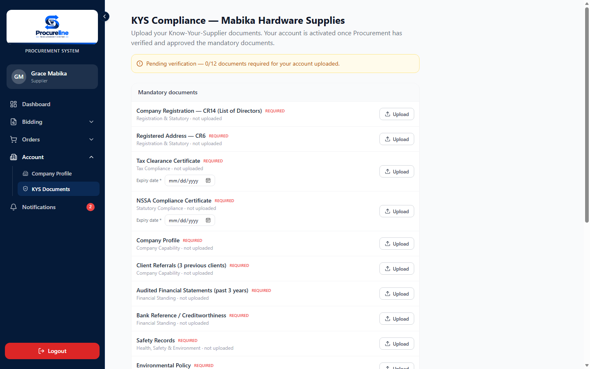
Figure KYS Documents: the banner says where you stand; each mandatory document has Upload and, where needed, an expiry date.
Open Account › KYS Documents. The banner at the top says where you stand; the list is split into Mandatory documents and Optional documents.
For each mandatory document click Upload and choose the file (PDF, image, Word or Excel, up to 5 MB).
Where the row asks for an Expiry date (tax clearance, NSSA, insurance, ISO, licences, NEC) enter it before uploading; it must be a future date.
Watch the row: awaiting review becomes verified when Procurement has checked it, or Rejected with the reason, in which case Replace it.
When Procurement has everything, it puts your account forward for activation and a manager approves it. The banner then reads Your account is active and verified and you are emailed. Until then you can still be invited to quote, but you cannot be awarded work.
Mandatory for every supplier
Also mandatory for critical, strategic and unclassified suppliers
Company Registration CR14 (list of directors); Tax Clearance Certificate
Registered Address CR6; NSSA Compliance Certificate; Company Profile; Client Referrals (three previous clients); Audited Financial Statements (past three years); Bank Reference; Safety Records; Environmental Policy; Insurance Coverage; Disaster Preparedness Plan
Tactical suppliers need CR14, CR6, Tax Clearance, NSSA and Insurance. NEC registration, industry licences and ISO certification are optional unless Procurement asks for them. Keep expiring documents current: reminders come 60, 30 and 7 days before expiry, and an expired mandatory document stops new awards until it is replaced
10.3 Your company profile and bank details
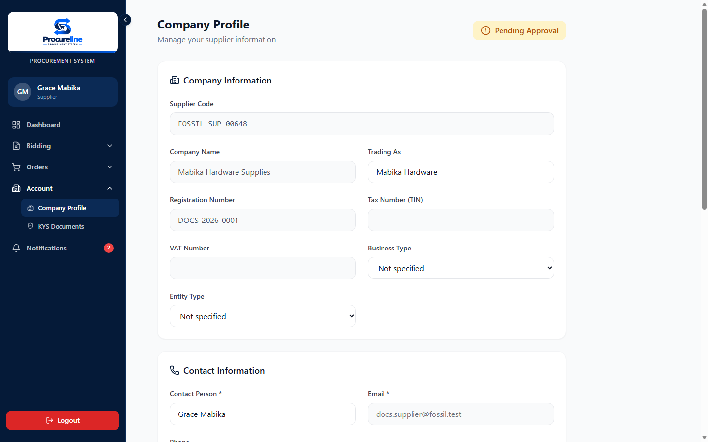
Figure Company Profile: your supplier code and account status at the top, bank details at the bottom.
Account › Company Profile shows your Supplier Code, your permanent number on the buyer's register, and the status badge of your account (10.8). Company name, registration, tax and VAT numbers can only be changed by Procurement. You can update your contact person, phone, address and Service Categories, and click Save Changes.
Changing bank details. Edit the Bank Details section and save. The change does not take effect at once: the page says it needs verification and approval. Procurement will telephone a number already on your record, then a second person approves. The status line under Bank Details tells you where it is: waiting for the call-back, confirmed by phone, approved, or not approved. Payments to you are held while the change is open, so make the change well before an invoice falls due, and make sure the phone number on your profile is answered.
10.4 Quote on an RFQ
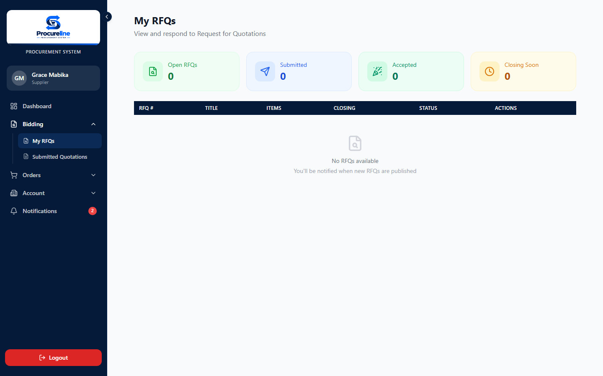
Figure My RFQs: open invitations with the closing time; Submit Quote appears while an RFQ is open.
You are emailed New RFQ when a buyer invites you. Open Bidding › My RFQs; the row shows the closing date and time remaining. Click View to read the items, specifications, delivery requirements and terms; any equipment photos the requester attached are shown with the line.
Click Submit Quote. The drawer has three steps: Prices, Terms, Review & submit.
Prices. Choose the currency, then enter a Unit Price for every line and the Brand. If you are offering an equivalent rather than the exact part, tick I am offering an equivalent / alternative part, say what it is and its part number, and attach photos. Lines you cannot supply still need a price to submit; say so in the notes.
Terms.Delivery (Days), Payment Terms (cash, net 7, 14, 30 or 60), Valid For (Days) and any notes.
Review & submit. Check the grand total, then click Submit Quotation. Once submitted, a quotation cannot be edited.
Toast Quotation submitted successfully. Your bid is sealed: nobody at the buyer can see it until the RFQ closes. Follow it under Bidding › Submitted Quotations: Submitted, Under Review, then Accepted or Rejected. If Procurement asks for a price revision, the RFQ shows a banner; submit a new quote, which replaces the old one.
10.5 Acknowledge a purchase order
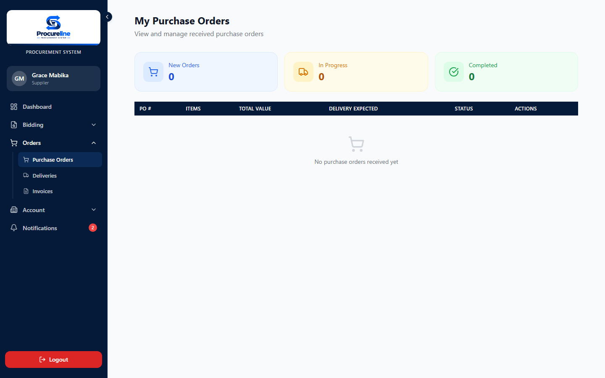
Figure My Purchase Orders: new orders show Acknowledge; acknowledged ones show Submit invoice and Manage Delivery.
When an order is fully approved you are emailed the order PDF. Open Orders › Purchase Orders; new orders show Acknowledge.
Click it, add your Delivery Note Number and Expected Delivery Date if known, and click Confirm Acknowledgment.
Open the order for the full detail and Download PDF.
Toast Purchase order acknowledged — next, deliver the goods. The order is now issued, the buyer's Stores expects the delivery, and Orders › Deliveries shows it as pending. Acknowledge promptly: the buyer is told when you do, and an unacknowledged order is one the buyer will chase.
10.6 Deliveries
Deliver with a delivery note quoting the order number. Stores counts and inspects the goods and raises a goods received voucher (GRV). Orders › Deliveries shows each delivery with its GRV number and status: Pending, Received, Accepted, Partially accepted or Rejected, and the quantities received and rejected per line. You are notified of what was accepted and rejected on every GRV. Faulty goods are returned within five days of delivery. Deliver the balance of a short delivery on a new delivery note; it gets its own GRV.
10.7 Submit an invoice and get paid
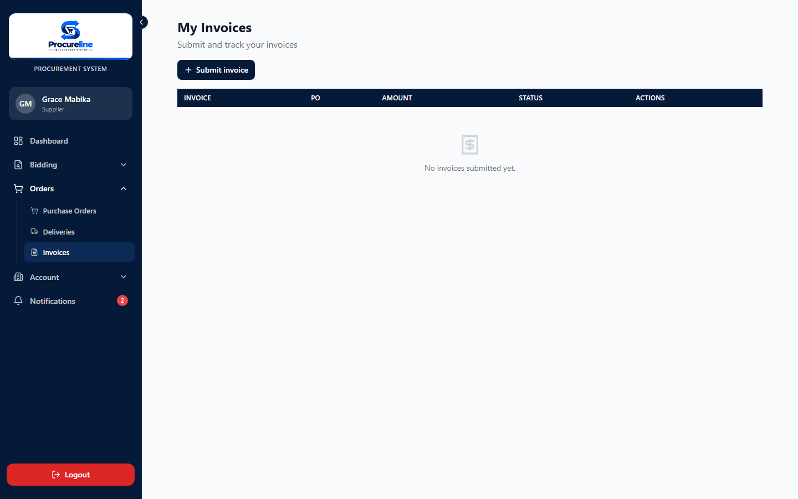
Figure My Invoices: each invoice with its status from Submitted to Paid; Submit invoice opens the form.
Open Orders › Invoices and click Submit invoice. Three steps: Order & invoice, Lines & VAT, Review & submit.
Order & invoice. Pick the Purchase order (only issued orders with goods received are offered), enter Your invoice number and the Invoice date.
Lines & VAT. The lines come from the quantities Stores received, not from the order. Charge the same VAT as the order carries, or the invoice will not match.
Review & submit. The page compares the order and your invoice and says whether they match. Click Submit for three-way match.
Toast Invoice submitted successfully. Finance matches it against the order and the GRVs. The status moves from Submitted to Approved and then Paid; Variance means Finance is looking at a difference, and Rejected shows the reason, after which you submit a corrected invoice. Open an invoice to see the Payments table with the date, method and reference of each payment, and the balance due. Payment runs are on Tuesdays and Thursdays.
10.8 What your account status means
Badge on Company Profile
Meaning
What to do
Pending Approval
Registered; documents not yet complete or not yet reviewed
Upload the mandatory documents (10.2)
With Procurement for Approval
Procurement has put you forward; a manager is deciding
Wait; you can still quote
Approved Supplier
Active and verified; you can be invited, awarded and paid
Keep documents current
Registration Not Approved
Your registration was turned down; the reason is on the KYS page
Contact Procurement if you believe it is wrong; it can be reopened
Suspended, Dormant
Set aside by Procurement with a reason; no new invitations or orders
Contact Procurement
Blacklisted
Removed from the register
Contact Procurement
Part 11
Help
Most problems are one of the following. Your first call is your administrator; a supplier's first call is the buyer's Procurement team. When you report a problem, give the record number (for example REQ-0042 or PO-0017) and what the screen said.
11.1 Common problems
I signed in but no code arrived.
Check spam. The code goes to the address on your user record; if that is wrong, the administrator fixes it under Staff Team. Codes expire after 10 minutes; click Back to sign in to get a new one. If nobody in the organisation receives codes, email sending has stopped: tell the technical team.
The page says my session is refused or sends me back to sign in.
You are at another organisation's address, or your session expired. Use your own organisation's address and sign in again.
I cannot see a button the manual describes.
Buttons appear only for the role that performs the step, and only when the record is at that step. Check the status badge: the record is still with the person before you. If your role is wrong, the administrator changes it.
My requisition has been "Pending HOD Approval" for days.
The department head has not acted. Their Approvals and Team Requisitions pages mark it overdue. If they are away, the administrator names a deputy on the department, who can approve.
I cannot submit my requisition.
It needs a title and at least one item. A new item not in the catalogue is fine; describe it.
Procurement cannot select or authorise my chosen supplier.
The supplier is not activated, its KYS is short for its tier, or a required document has expired. Open the supplier: the facts strip shows Spend authorisation and KYS progress. Complete the file and submit for activation (6.5), or replace the expired document.
The RFQ closed with fewer than three quotes.
A waiver from the COO or Head of Procurement is needed (5.5, 7.3), or re-source with more suppliers invited. Check that invited suppliers can actually sign in; help them register (10.1).
The order went to the COO although it is small.
It is in a currency with no exchange rate on file, so the system routes it to the COO rather than guess. The Procureline operators set the rate (9.4).
Finance cannot approve an invoice.
Either there is no GRV for the goods (Stores must receive them first, 4.3), or the invoice exceeds what was received and not yet invoiced. Reject it so the supplier submits a corrected one.
A supplier says they changed their bank details but payments still go to the old account.
The change is waiting for the call-back or the second approval (6.7). Until it is approved, the old account stands and payments are held.
Stock on the screen does not match the shelf.
A movement was not recorded. Find it in Stock Movements and record the missing issue, receipt or transfer. Do not edit the balance.
No reminders or overdue alerts are arriving.
The hourly jobs are not running on the hosted API. The administrator checks the audit log for the job and tells the technical team (Launch Manual 1.2, item 6).
A supplier cannot register: "This company is already registered".
A record with that registration number exists, perhaps created by Procurement. The supplier signs in with that login or uses Forgot password?; otherwise Procurement looks the record up by registration number.
11.2 Glossary
Term
Meaning
Activation request
A pending supplier put forward by Procurement for a second person to approve. Open until approved, returned or rejected
Award
The decision to buy from a supplier's quotation, in full or line by line
Business unit
What Procureline calls an organisation it serves: its own address, its own database and its own settings
COO limit
The order value in US dollars at or above which the COO must approve. The default is USD 5,000
CR14 / CR6
Company registration forms: the list of directors (CR14) and the registered address (CR6)
Deputy head
A user who can act for a department head on that department's requisitions
GRV
Goods received voucher: the Stores record of what physically arrived
Head of Procurement
The department head of the Procurement department. Authorises awards and gives the first approval on orders
IR
Internal requisition: a requisition as seen by Stores during stock review
KYS
Know Your Supplier: the due diligence checklist a supplier must pass before it can be paid
MSDS
Material safety data sheet, required for hazardous goods
NSSA
National Social Security Authority; its compliance certificate is a KYS item
PO
Purchase order: the commitment to buy, sent to the supplier after approval
Requisition (PR)
A request from a department for goods or services
Rejected (registration)
A supplier registration turned down with a reason. The company cannot quote or be awarded; the registration can be reopened. Not a blacklisting
RFQ
Request for quotation, sent to invited suppliers
Sealed bid
A quotation nobody can see or compare until the RFQ closes
Spend-authorised
A supplier whose activation has been approved and who may receive awards and orders
Store requisition
A department's request to collect issued or delivered goods from Stores
Supplier code
The permanent register number given to a supplier on first save, such as ORG-SUP-00042
Three-way match
Comparing the order, the goods received and the invoice before payment
Tier
A supplier's risk class (critical, strategic, tactical, transactional, unclassified), which sets the depth of its KYS and how often it is reviewed
Two-person rule
A control that needs two different people, one to propose and one to approve: awards, bank-detail changes and supplier activation
Waiver
Approval to award with fewer than three quotations, with a reason from a fixed list
ProcurelineProcurement system
Thank you
Questions about this manual go to your Procureline administrator. Suppliers contact the Procurement team of the organisation they supply.
![]()